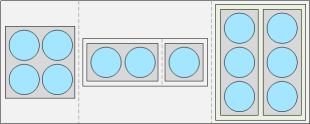

1 Introduction
Le point de départ d’une analyse de données en R est d’avoir accès aux données. Ces données doivent être stockées dans un ou des objets R. Pour utiliser R, il faut donc d’abord connaître les différents types d’objets pouvant servir de « contenant à données » et savoir travailler avec ces objets.
1.1 Types d’objets R servant de structure de données
Le tableau suivant présente les différents types d’objets R servant de structure de données offerts dans le R de base, selon leur nombre de dimensions.
| Nombre de dimensions | Objets atomiques | Objets récursifs |
|---|---|---|
| 1 | vecteur | liste |
| 2 | matrice | data frame |
| \(\vdots\) | \(\vdots\) | |
| n | array | - |
Aux 5 types d’objets de ce tableau, il faut ajouter les facteurs. Ils sont une généralisation des vecteurs, utiles pour stocker des données catégoriques.
D’autres types d’objets existent dans le R de base, mais ne servent pas de structure de données, par exemple les fonctions, les expressions (comme les formules), etc.
Les objets dont les éléments sont contraints d’être des données toutes du même type sont qualifiés de « atomiques », alors que les autres sont qualifiés de « récursifs ». En fait, les listes sont parfois appelées « vecteurs récursifs » dans la documentation de R. Ici, le mot vecteur, non accompagné de l’adjectif récursif, fera toujours référence à un vecteur atomique.
Les éléments des objets récursifs sont d’autres objets. Pour une liste, ils peuvent être n’importe quoi : des vecteurs, des facteurs, des matrices, des arrays, des listes, des data frames, des fonctions, des expressions, etc. Pour un data frame, ils sont typiquement des vecteurs ou des facteurs, tous de même longueur.
Illustrons maintenant ces différents types d’objets servant de structure de données. De l’information détaillée sur chaque type d’objet est présentée plus loin.
1.1.1 Exemple de vecteur
Le vecteur est l’objet le plus simple. Voici un exemple de vecteur :
vec## [1] 3.5 7.8 9.9 5.7str(vec)## num [1:4] 3.5 7.8 9.9 5.7Il pourrait être représenté comme suit :  ou encore à la verticale :
ou encore à la verticale : 
Il n’a qu’une dimension et ses éléments (représentés par les cercles bleus) sont des données toutes du même type.
1.1.2 Exemple de matrice
La matrice est une généralisation à 2 dimensions du vecteur. Voici un exemple de matrice :
mat## [,1] [,2] [,3]
## [1,] TRUE FALSE FALSE
## [2,] TRUE TRUE FALSE
## [3,] FALSE TRUE TRUE
## [4,] TRUE TRUE TRUEstr(mat)## logi [1:4, 1:3] TRUE TRUE FALSE TRUE FALSE TRUE ...Elle pourrait être représentée comme suit : 
Comme pour un vecteur, tous ses éléments doivent être du même type.
1.1.3 Exemple d’array
Le dernier objet atomique est l’array, qui généralise le vecteur et la matrice à un nombre quelconque de dimensions. Voici un exemple d’array à 3 dimensions :
arr## , , 1
##
## [,1] [,2] [,3]
## [1,] 2 3 6
## [2,] 4 1 3
##
## , , 2
##
## [,1] [,2] [,3]
## [1,] 9 6 8
## [2,] 2 3 0
##
## , , 3
##
## [,1] [,2] [,3]
## [1,] 5 2 7
## [2,] 3 8 1
##
## , , 4
##
## [,1] [,2] [,3]
## [1,] 2 5 8
## [2,] 6 3 5str(arr)## num [1:2, 1:3, 1:4] 2 4 3 1 6 3 9 2 6 3 ...Il pourrait être représenté comme suit : 
1.1.4 Exemple de liste
Une liste est pour sa part un objet récursif : elle contient d’autres objets, de types quelconques. Voici un exemple de liste :
liste## [[1]]
## [,1] [,2]
## [1,] 2 3
## [2,] 4 1
##
## [[2]]
## [[2]][[1]]
## [1] 2 3
##
## [[2]][[2]]
## [1] 8
##
##
## [[3]]
## V1 V2
## 1 2 1
## 2 4 5
## 3 3 3str(liste)## List of 3
## $ : num [1:2, 1:2] 2 4 3 1
## $ :List of 2
## ..$ : num [1:2] 2 3
## ..$ : num 8
## $ :'data.frame': 3 obs. of 2 variables:
## ..$ V1: num [1:3] 2 4 3
## ..$ V2: num [1:3] 1 5 3Elle pourrait être représentée comme suit : 
Les éléments d’une liste (séparés par une ligne pointillée dans la figure) ne sont pas de simples données comme dans un vecteur. Il s’agit d’autres objets. Dans cet exemple, la liste contient même une autre liste (deuxième élément).
1.1.5 Exemple de data frame
Le data frame est en quelque sorte un type particulier de liste, mais il partage aussi des caractéristiques avec les matrices, étant réputé posséder 2 dimensions (des lignes et des colonnes). Ses éléments sont des objets contraints d’être de dimensions concordantes. Dans la grande majorité des cas, les éléments sont des vecteurs ou des facteurs de même longueur, formant les colonnes du data frame. Voici un exemple de data frame.
dat## V1 V2 V3
## 1 3.5 matin TRUE
## 2 7.8 après-midi TRUE
## 3 9.9 soir FALSE
## 4 5.7 nuit TRUEstr(dat)## 'data.frame': 4 obs. of 3 variables:
## $ V1: num 3.5 7.8 9.9 5.7
## $ V2: chr "matin" "après-midi" "soir" "nuit"
## $ V3: logi TRUE TRUE FALSE TRUEIl pourrait être illustré comme suit : 
La taille de la première dimension d’un data frame typique est la longueur commune des objets qu’il contient (4 dans l’exemple) et la taille de sa deuxième dimension est le nombre d’objets qu’il contient (dans l’exemple, le data frame contient 3 vecteurs).
Les data frames ont été créés spécialement pour l’analyse statistique de données. Ils représentent des tableaux de données dans lesquels les lignes sont des observations et les colonnes des variables (des variables au sens statistique et non au sens informatique). Le data frame fait donc penser à une matrice. Cependant, contrairement à une matrice, les données dans les différentes colonnes d’un data frame n’ont pas à être du même type.
1.1.6 Exemple de facteur
Un autre type d’objet propre à la statistique a été créé en R : le facteur. Ce type d’objet est utilisé pour stocker les valeurs observées d’une variable catégorique.
fac## [1] 5 2 5 5
## Levels: 2 5str(fac)## Factor w/ 2 levels "2","5": 2 1 2 2Il s’agit d’une généralisation du vecteur.
1.2 Types de données
Les éléments contenus dans les objets atomiques sont des données d’un des types suivants :
- réel,
- entier,
- caractère,
- logique,
- ainsi que quelques autres types qui ne seront pas utilisés dans le cours, tels que « complexe » et « brut ».
Voici un exemple de chacun des types.
1.2.1 Données réelles
Une donnée réelle est un nombre réel, par exemple
re <- 5.8
re## [1] 5.8Le terme informatique en anglais pour une donnée réelle est « double ».
typeof(re)## [1] "double"Par contre, en R, la distinction entre les réels et les entiers est peu utilisée. R simplifie les choses et dit parfois d’une donnée réelle qu’il s’agit d’une donnée numérique.
str(re)## num 5.81.2.2 Données entières
Une donnée entière est un nombre entier (en anglais integer), donc sans partie décimale.
en <- 1L
en## [1] 1Dans cet exemple, le caractère L après le nombre indique à R que nous désirons qu’il le considère comme un entier.
str(en)## int 1typeof(en)## [1] "integer"is.numeric(en)## [1] TRUEis.integer(en)## [1] TRUEis.double(en)## [1] FALSESans ce caractère L, la majorité des fonctions en R traite par défaut les nombres comme des réels.
un <- 1
un## [1] 1str(un)## num 1typeof(un)## [1] "double"is.numeric(un)## [1] TRUEis.integer(un)## [1] FALSEis.double(un)## [1] TRUE1.2.3 Données caractères
Une donnée caractère est une chaîne de caractères.
ca <- "Hello world!"
ca## [1] "Hello world!"str(ca)## chr "Hello world!"typeof(ca)## [1] "character"Ce sont les guillemets (simples ou doubles) qui indiquent à R qu’il s’agit d’une donnée de type caractère.
str("1")## chr "1"1.2.4 Données logiques
Une donnée logique est simplement TRUE ou FALSE.
lo <- TRUE
lo## [1] TRUEstr(lo)## logi TRUEtypeof(lo)## [1] "logical"Attention : "TRUE" est une chaîne de caractères et non une donnée logique, à cause des guillemets bien sûr.
str("TRUE")## chr "TRUE"1.2.5 Données manquantes
Peu importe le type de données, une donnée manquante est représentée en R par la constante NA (pour « Not Available »).
NA## [1] NACe n’est pas la même chose que NaN qui signifie plutôt « Not a Number ».
0/0## [1] NaNL’existence d’une constante pour représenter les données manquantes est une autre particularité du langage R spécifique à l’analyse de données.
1.3 Obtention d’informations sur les objets
Pour avoir accès aux informations relatives à un objet, il existe une série de fonctions utiles, par exemple :
- type de l’objet :
is.(vector/matrix/array/list/data.frame/factor/…); - attributs de l’objet :
attributes(tous les attributs),attr(un seul attribut) et les fonctions raccourciesnames,dimnames,colnames,rownames,dim,nrow,ncol,class,levels, etc. - type des éléments :
typeof,mode,is.(numeric/character/logical/…); - nombre d’éléments :
length.
Ces fonctions seront illustrées plus loin.
Le tableau suivant résume ce que retournent les fonctions typeof, mode et class pour les différents types d’objets.
| type d’objet | typeof |
mode |
class |
|---|---|---|---|
| vecteur | type des données | type simplifié des données | comme typeof |
| matrice | type des données | type simplifié des données | "matrix" "array" |
| array | type des données | type simplifié des données | "array" |
| liste | "list" |
"list" |
"list" |
| data frame | "list" |
"list" |
"data.frame" |
| facteur | "integer" |
"numeric" |
"factor" |
Le type simplifié des données retourné par mode est explicité dans le tableau suivant, présentant ce que retournent les fonctions typeof et mode pour les différents types de données.
| type de données | typeof |
mode |
|---|---|---|
| réelles | "double" |
"numeric" |
| entières | "integer" |
"numeric" |
| caractères | "character" |
"character" |
| logiques | "logical" |
"logical" |
Ainsi, typeof distingue les données réelles et entières, alors que mode les qualifie toutes de numériques. (Les tableaux précédents sont inspirés de [1].)
1.3.1 Attributs des objets
Les structures de données R peuvent posséder des attributs, qui servent à contenir des informations supplémentaires concernant les données stockées dans l’objet. Ces informations supplémentaires sont parfois appelées métadonnées.
Par exemple, une matrice ou un array possède toujours un attribut portant le nom dim contenant les tailles de toutes les dimensions de l’objet.
attributes(mat)## $dim
## [1] 4 3Le fonction attributes retourne une liste contenant tous les attributs d’un objet, nommés. La fonction attr permet d’accéder à la valeur d’un attribut particulier, identifié par son nom.
attr(mat, "dim")## [1] 4 3Pour certains attributs communs, tels que dim, il existe même des fonctions spécifiques pour obtenir leur valeur. Par exemple :
dimretourne l’attributdimd’un objet,
dim(mat)## [1] 4 3nrowretourne la taille de la première dimension d’un objet,
nrow(mat)## [1] 4ncolretourne la taille de la deuxième dimension d’un objet,
ncol(mat)## [1] 3Certains types d’objets, tels que le vecteur, ne possèdent pas d’attributs par défaut.
attributes(vec)## NULLIl est cependant toujours possible d’ajouter des attributs à un objet, portant le nom de notre choix. Les fonctions qui retournent les valeurs d’attributs peuvent aussi servir à initialiser ou remplacer les valeurs des attributs. Pour ce faire, il suffit d’accompagner la commande d’extraction de l’attribut d’un opérateur d’assignation (<-) suivi de la valeur souhaitée, comme dans l’exemple ci-dessus.
attr(vec, "description") <- "exemple de vecteur"
str(vec)## num [1:4] 3.5 7.8 9.9 5.7
## - attr(*, "description")= chr "exemple de vecteur"Pour retirer un attribut, il faut lui assigner la valeur spéciale NULL.
attr(vec, "description") <- NULL
str(vec)## num [1:4] 3.5 7.8 9.9 5.7
Vue d’ensemble des attributs possédés par un objet selon son type
| Type d’objet | names |
dimnames |
dim |
class |
levels |
|---|---|---|---|---|---|
| vecteur | (\(\checkmark\)) | - | - | \(\bullet\) | - |
| matrice ou array | - | (\(\checkmark\)) | \(\checkmark\) | \(\bullet\) | - |
| liste | (\(\checkmark\)) | - | - | \(\bullet\) | - |
| data frame | (\(\checkmark\)) | (\(\checkmark\), \(\bullet\)) | \(\bullet\) | \(\checkmark\) | - |
| facteur | (\(\checkmark\)) | - | - | \(\checkmark\) | \(\checkmark\) |
Légende :
« - » = attribut non existant pour ce type d’objet
« \(\checkmark\) » = attribut existe (non obligatoire si encadré de parenthèses)
« \(\bullet\) » = métadonnée existante, mais pas dans les attributs obtenus avec la fonction attributes
1.4 Extraction d’éléments
L’extraction d’éléments dans un jeu de données est une opération très usuelle au cours d’une analyse de données. Par exemple, il arrive souvent de vouloir faire un certain calcul seulement sur une partie des données plutôt que sur le jeu de données entier. Il faut alors prélever les données concernées.
1.4.1 Opérateurs d’indiçage
Il y a trois opérateurs d’indiçage d’éléments d’un objet R : [, [[ et $. Ces opérateurs permettent d’extraire des éléments s’ils sont utilisés seuls, et ils permettent de remplacer des éléments s’ils sont utilisés en combinaison avec une assignation.
1.4.1.1 [ versus [[ et $
L’opérateur [ effectue de l’extraction d’éléments (potentiellement plus d’un) en préservant presque toujours la structure de l’objet (l’objet produit en résultat de l’extraction est, sauf exception, du même type que l’objet d’origine et conserve la majorité de ses attributs).
Les opérateurs [[ et $ permettent de référer à un seul élément et ils simplifient l’objet lors d’une extraction (retirent des attributs pour les objets atomiques et sortent de l’objet principal pour un objet récursif).
Voici des exemples.
- extraction de deux éléments d’un objet atomique avec
[
vec## [1] 3.5 7.8 9.9 5.7vec[c(2, 4)]## [1] 7.8 5.7Dans cet exemple, la fonction c sert à créer un vecteur contenant les positions des éléments à extraire.
- extraction d’un élément d’un objet récursif avec
[, en préservant la structure de l’objet d’origine
str(liste)## List of 3
## $ : num [1:2, 1:2] 2 4 3 1
## $ :List of 2
## ..$ : num [1:2] 2 3
## ..$ : num 8
## $ :'data.frame': 3 obs. of 2 variables:
## ..$ V1: num [1:3] 2 4 3
## ..$ V2: num [1:3] 1 5 3extrait_1_liste <- liste[1]
str(extrait_1_liste)## List of 1
## $ : num [1:2, 1:2] 2 4 3 1Ici, le résultat est encore une liste, mais contenant un seul élément.
- extraction d’un élément d’un objet récursif avec
[[, avec perte de la structure de l’objet d’origine
extrait_2_liste <- liste[[1]]
str(extrait_2_liste)## num [1:2, 1:2] 2 4 3 1Ici, le résultat est un vecteur, celui qui était stocké en position 1 dans l’objet liste.
- extraction d’un élément d’un objet atomique avec perte d’un attribut
mat## [,1] [,2] [,3]
## [1,] TRUE FALSE FALSE
## [2,] TRUE TRUE FALSE
## [3,] FALSE TRUE TRUE
## [4,] TRUE TRUE TRUEattributes(mat)## $dim
## [1] 4 3extrait_mat <- mat[[1, 3]]
extrait_mat## [1] FALSEattributes(extrait_mat)## NULL
1.4.1.2 Extractions d’éléments dans un objet à plusieurs dimensions
Les opérateurs [ et [[ prennent en entrée un argument pour chacune des dimensions d’un objet, comme illustré dans l’exemple précédent. Voici un autre exemple, avec l’array à 3 dimensions arr. La commande suivante extrait un seul élément de arr, dont la position est identifiée par les valeurs fournies en entrée aux arguments de [.
arr[2, 1, 3]## [1] 31.4.1.3 Spécificité de l’opérateur $
L’opérateur $ fonctionne seulement avec les objets récursifs (une liste ou un data frame) dont les éléments sont nommés. Il doit être suivi du nom de l’élément à extraire. Ce nom n’a pas besoin d’être encadré de guillemets s’il ne contient pas d’espaces.
Prenons par exemple le data frame dat observé précédemment. Nous ne l’avions peut-être pas remarqué, mais les éléments de dat sont nommés.
str(dat)## 'data.frame': 4 obs. of 3 variables:
## $ V1: num 3.5 7.8 9.9 5.7
## $ V2: chr "matin" "après-midi" "soir" "nuit"
## $ V3: logi TRUE TRUE FALSE TRUEattr(dat, "names")## [1] "V1" "V2" "V3"Alors il est possible d’extraire disons la deuxième colonne du data frame par la commande suivante.
dat$V2## [1] "matin" "après-midi" "soir" "nuit"1.4.1.4 Identification de l’élément à extraire avec l’opérateur [[
Les arguments fournis à [[ pour identifier l’unique élément à extraire peuvent recevoir des valeurs de type :
- numérique : un nombre spécifiant la position de l’élément selon la dimension, ou
- caractère (dans le cas d’éléments nommés) : le nom de l’élément selon la dimension.
Par exemple, le 2ième élément de la colonne nommée "V2" du data frame dat peut être extrait ainsi.
dat[[2, "V2"]]## [1] "après-midi"Si une valeur numérique non entière est fournie en argument, elle est tronquée vers 0, comme dans cet exemple.
vec## [1] 3.5 7.8 9.9 5.7vec[[2.6]]## [1] 7.81.4.1.5 Identification du ou des éléments à extraire avec l’opérateur [
Étant donné que l’opérateur [ permet l’extraction de plusieurs éléments, il accepte une plus grande variété de types de valeurs. Voici les valeurs qu’il accepte en argument pour identifier les éléments à extraire :
- un ou des nombres positifs, dont les valeurs sont entre 1 et la taille de la dimension concernée :
positions des éléments à sélectionner; - un ou des nombres négatifs, dont les valeurs sont entre 1 et la taille de la dimension concernée :
-1 \(\times\) positions des éléments à exclure; - une ou des chaînes de caractères (possible seulement si les éléments sont nommés) :
noms des éléments à sélectionner; - vecteur de logiques (doit être de la même longueur que la dimension concernée) :
TRUEpour les éléments à sélectionner,FALSEpour ceux à exclure; - rien : utile par exemple pour extraire tous les éléments selon une dimension d’un objet à plusieurs dimensions.
Voici quelques exemples :
- extraction d’éléments identifiés par leur position,
vec[c(1, 3)]## [1] 3.5 9.9- extraction d’éléments par identification d’éléments à exclure,
vec[-c(2, 4)]## [1] 3.5 9.9- extraction d’éléments identifiés par leurs noms,
dat[c("V1", "V2")]## V1 V2
## 1 3.5 matin
## 2 7.8 après-midi
## 3 9.9 soir
## 4 5.7 nuit- extraction d’éléments identifiés par un vecteur logique,
vec[c(TRUE, FALSE, TRUE, FALSE)]## [1] 3.5 9.9- extraction de tous les éléments selon une des dimensions.
dat[2, ]## V1 V2 V3
## 2 7.8 après-midi TRUE
Lors de l’indiçage à l’aide de valeurs numériques positives ou de chaînes de caractères, les valeurs peuvent se répéter. Dans ce cas, les éléments sont extraits autant de fois que la fréquence de leur identifiant, comme dans ces exemples.
vec[c(1, 1, 1, 2, 2, 3, 3, 3, 3)]## [1] 3.5 3.5 3.5 7.8 7.8 9.9 9.9 9.9 9.9dat[, c("V2", "V2")]## V2 V2.1
## 1 matin matin
## 2 après-midi après-midi
## 3 soir soir
## 4 nuit nuitLes sections suivantes proposent plusieurs autres exemples d’extraction de données.
1.4.1.6 Argument drop de l’opérateur [
L’opérateur [ préserve la structure des objets, sauf dans quelques cas particuliers.
Un de ces cas est l’extraction d’une colonne, complète ou partielle, d’un data frame. Le résultat de l’extraction est alors un vecteur ou un facteur, et non un autre data frame, comme dans cet exemple.
str(dat)## 'data.frame': 4 obs. of 3 variables:
## $ V1: num 3.5 7.8 9.9 5.7
## $ V2: chr "matin" "après-midi" "soir" "nuit"
## $ V3: logi TRUE TRUE FALSE TRUEstr(dat[c(1, 3), 2])## chr [1:2] "matin" "soir"Il n’a pas ce comportement lors de l’extraction d’une ligne d’un data frame, car les éléments sur une même ligne ne sont pas nécessairement du même type.
str(dat[2, ])## 'data.frame': 1 obs. of 3 variables:
## $ V1: num 7.8
## $ V2: chr "après-midi"
## $ V3: logi TRUECependant, avec les objets atomiques, l’opérateur [ cherche toujours par défaut à réduire le plus possible le nombre de dimensions de l’objet retourné. Ainsi, l’extraction suivante retourne un vecteur, alors que l’objet d’origine est un array à trois dimensions.
str(arr[, 2, 4])## num [1:2] 5 3Il est possible de contrôler ce comportement grâce à l’argument drop. Donner la valeur FALSE à cet argument empêche [ de réduire le nombre de dimensions du résultat retourné. Ainsi, la commande suivante retourne un array,
str(arr[, 2, 4, drop = FALSE])## num [1:2, 1, 1] 5 3et la suivante un data frame.
str(dat[c(1, 3), 2, drop = FALSE])## 'data.frame': 2 obs. of 1 variable:
## $ V2: chr "matin" "soir"1.4.2 Fonctions d’extraction
En plus des opérateurs d’indiçage, certaines fonctions permettent aussi d’extraire des éléments, notamment les fonctions head, tail et subset.
1.4.2.1 Fonction head
La fonction head extrait les premiers éléments d’un vecteur, d’une liste ou d’un facteur et les premières lignes d’une matrice ou d’un data frame. L’argument n permet de spécifier combien d’éléments ou de lignes extraire. Voici un exemple.
head(vec, n = 2)## [1] 3.5 7.8head(dat, n = 3)## V1 V2 V3
## 1 3.5 matin TRUE
## 2 7.8 après-midi TRUE
## 3 9.9 soir FALSE1.4.2.2 Fonction tail
À l’inverse, la fonction tail extrait les derniers éléments ou les dernières lignes.
tail(vec, n = 3)## [1] 7.8 9.9 5.7tail(dat, n = 1)## V1 V2 V3
## 4 5.7 nuit TRUE1.4.2.3 Fonction subset
La fonction subset est quant à elle une option de rechange à l’opérateur [ utilisé avec des identifiants logiques. Elle fonctionne avec les vecteurs.
subset(vec, subset = c(FALSE, TRUE, TRUE, TRUE))## [1] 7.8 9.9 5.7Cependant, elle est surtout utile avec des matrices et des data frames. Avec un objet à deux dimensions, l’argument subset de la fonction du même nom sert à identifier les lignes à extraire et l’argument select à identifier les colonnes.
subset(mat, subset = c(FALSE, TRUE, FALSE, TRUE), select = 1)## [,1]
## [1,] TRUE
## [2,] TRUELorsque le premier argument fourni en entrée à la fonction subset est un data frame, il est possible de référer aux colonnes de celui-ci directement par leurs noms dans les arguments subset et select. Il est aussi possible de retirer une colonne en utilisant l’opérateur - avant le nom de la colonne à retirer dans la valeur fournie à l’argument select.
subset(dat, subset = c(TRUE, FALSE, FALSE, TRUE), select = -V3)## V1 V2
## 1 3.5 matin
## 4 5.7 nuitNote : Typiquement, le vecteur de TRUE et FALSE servant à identifier les lignes à sélectionner est créé par une condition logique, comme dans l’exemple suivant.
subset(dat, subset = V1 < 6, select = -V3)## V1 V2
## 1 3.5 matin
## 4 5.7 nuitNous verrons plus tard comment utiliser des opérateurs logiques pour créer des vecteurs d’identifiants logiques. Avec ces opérateurs, il sera facile d’extraire par exemple toutes les valeurs tombant dans un certain ensemble de valeurs acceptées.
1.5 Remplacement d’éléments
En combinant une extraction à un opérateur d’assignation (<-) suivi de nouvelles valeurs, des éléments d’un objet peuvent être remplacés. Voici un exemple.
vec## [1] 3.5 7.8 9.9 5.7vec[3] <- 6.1
vec## [1] 3.5 7.8 6.1 5.7Il est tout à fait possible de remplacer plus d’un élément à la fois, comme dans l’exemple suivant.
dat## V1 V2 V3
## 1 3.5 matin TRUE
## 2 7.8 après-midi TRUE
## 3 9.9 soir FALSE
## 4 5.7 nuit TRUEdat[c(1, 2), 3] <- c(NA, FALSE)
dat## V1 V2 V3
## 1 3.5 matin NA
## 2 7.8 après-midi FALSE
## 3 9.9 soir FALSE
## 4 5.7 nuit TRUEIl est parfois utile d’exploiter la règle de recyclage lors du remplacement d’éléments dans un objet R. Cette règle permet des opérations sur des vecteurs qui ne sont pas de même longueur. Les éléments du vecteur le plus court sont répétés de façon à ce que ce vecteur devienne de la même longueur que le vecteur le plus long.
Par exemple, si une seule valeur de remplacement est fournie, mais que plusieurs éléments sont identifiés, alors ceux-ci seront tous remplacés par l’unique valeur fournie.
vec[1:3] <- 0.5
vec## [1] 0.5 0.5 0.5 5.7Cela fonctionne aussi lorsque le vecteur le plus court est de longueur supérieure à 1. Dans l’exemple suivant, 4 valeurs sont identifiées à remplacer, mais 2 valeurs de remplacement sont fournies. Le vecteur de valeurs de remplacement est donc dupliqué.
vec[1:4] <- c(0.1, 0.2)
vec## [1] 0.1 0.2 0.1 0.2Si la longueur du vecteur le plus long n’est pas un multiple de la longueur du vecteur le plus court, ça fonctionne encore, mais un avertissement est émis, comme dans cet exemple.
vec[1:3] <- c(2.0, 4.9)## Warning in vec[1:3] <- c(2, 4.9): number of items to replace is not a multiple of
## replacement lengthvec## [1] 2.0 4.9 2.0 0.2Mentionnons que la fonction edit permet également de modifier des éléments dans une matrice ou un data frame à l’intérieur d’un chiffrier ouvert dans une fenêtre externe.
Aussi, la fonction replace permet de remplacer des éléments dans un vecteur. Ces fonctions ne sont pas illustrées ici.